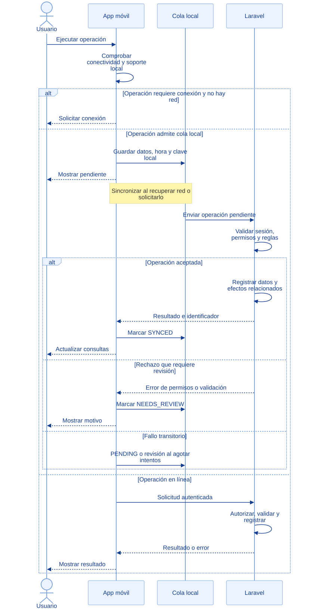

EcoLact / Flujos de negocio
Integración móvil y web
Una operación local no es aún una confirmación
La app combina consultas almacenadas y operaciones pendientes con solicitudes al backend Laravel. Los permisos, el stock y las reglas definitivas se comprueban en el servidor.
Usuario
Ejecuta la operación y atiende errores.
App móvil
Consulta conectividad, guarda datos y sincroniza.
Backend Laravel
Autoriza, valida, registra y devuelve resultados.
Así funciona el proceso

Ampliar diagrama · Descargar fuente Mermaid

Ver la fuente editable del diagrama
sequenceDiagram
actor U as Usuario
participant A as App móvil
participant Q as Cola local
participant B as Laravel
U->>A: Ejecutar operación
A->>A: Comprobar conectividad y soporte local
alt Operación requiere conexión y no hay red
A-->>U: Solicitar conexión
else Operación admite cola local
A->>Q: Guardar datos, hora y clave local
A-->>U: Mostrar pendiente
Note over A,Q: Sincronizar al recuperar red o solicitarlo
Q->>B: Enviar operación pendiente
B->>B: Validar sesión, permisos y reglas
alt Operación aceptada
B->>B: Registrar datos y efectos relacionados
B-->>A: Resultado e identificador
A->>Q: Marcar SYNCED
A-->>U: Actualizar consultas
else Rechazo que requiere revisión
B-->>A: Error de permisos o validación
A->>Q: Marcar NEEDS_REVIEW
A-->>U: Mostrar motivo
else Fallo transitorio
A->>Q: PENDING o revisión al agotar intentos
end
else Operación en línea
A->>B: Solicitud autenticada
B->>B: Autorizar, validar y registrar
B-->>A: Resultado o error
A-->>U: Mostrar resultado
end
Paso a paso
- El usuario inicia una consulta u operación. La app comprueba conectividad y los datos locales necesarios para esa funcionalidad.
- Las operaciones que admiten cola guardan datos, hora del evento e identificador local. Otras exigen conexión y muestran el motivo.
- Al sincronizar, el motor recorre pendientes en orden de creación y despacha cada tipo a su manejador. Un bloqueo evita barridos concurrentes.
- Laravel valida sesión, rol, asistencia cuando corresponde y reglas de negocio. Los registros locales todavía pueden ser rechazados por stock, precio o permisos.
- Una respuesta válida marca SYNCED y conserva el identificador del servidor. Los rechazos pasan a NEEDS_REVIEW; los fallos transitorios vuelven a PENDING hasta el límite.
- La app actualiza los datos disponibles y presenta el resultado. Los portales web consultan los registros ya aceptados por el backend.
PENDING → SYNCING
Operación guardada que aún debe enviarse. No equivale a un registro confirmado en el servidor.
SYNCED
El servidor respondió correctamente y se conserva su identificador.
NEEDS_REVIEW
Error de validación, permisos o agotamiento de los cinco intentos transitorios. Requiere atención.
Alcance real del trabajo sin conexión
| Funcionalidad | Comportamiento comprobado |
|---|---|
| Acopio | Entregas, inicio y «No entregó» cuentan con operaciones de cola; la identificación puede usar datos locales disponibles |
| Finalizar recorrido | Requiere conexión en AcopiadorRepository |
| Calidad | Selección manual, captura de ticket y análisis tienen almacenamiento o cola; el OCR del servidor se procesa al enviar |
| Sorteo de muestra | Requiere conexión y firma del servidor |
| Planta | Inicio y cierre de producción y compra revisada tienen manejadores de sincronización; el servidor vuelve a validar |
| Ventas | Contado con precio y stock conocidos puede quedar pendiente; descuento de planilla requiere conexión |
| Boleta PDF y comprador nuevo | Requieren conexión en la app de ventas |
| Proveedor | Consultas con datos almacenados y actualización al conectar; no se promete información reciente sin sincronizar |
Reintentos e idempotencia
SyncManager limita a cinco intentos transitorios antes de exigir revisión. Un rechazo de validación o permiso no se reintenta indefinidamente. Una operación sin manejador disponible permanece pendiente.
Las entregas reutilizan su token de idempotencia. Las rutas de inicio/cierre de producción, confirmación de compra y venta usan el middleware idempotente; sus clientes envían la clave correspondiente. No se extiende esa garantía a todas las rutas: el manejador de análisis de calidad no usa esa cabecera para guardar y finalizar. La selección de muestra tiene además su propia protección de reenvío en el dominio.
Dato local y dato confirmado son distintos. Recuperar conectividad no implica aceptación automática: el usuario debe revisar las operaciones rechazadas. Tampoco se promete sincronización en segundo plano cuando la aplicación está cerrada.
Resultado del proceso
Operaciones aceptadas reflejadas en consultas web y móviles; pendientes y errores identificables sin presentar una garantía universal de funcionamiento offline.
Trazabilidad con el código revisado
Revisión documental: 28 de octubre de 2026. Las rutas siguientes identifican las fuentes locales; no implican haber ejecutado el sistema de negocio.
EcoLactWeb/app/Application/Acopio/RegistrarEntrega.phpEcoLactWeb/app/Application/Calidad/SeleccionarMuestraCalidad.phpEcoLactWeb/routes/web.phpyEcoLactWeb/routes/api.phpEcoLactMobile/shared/src/commonMain/kotlin/pe/edu/upeu/ecolactmobile/feature/(rutas, repositorios y pantallas del rol correspondiente).core/sync/SyncManager.kt,SyncQueueRepository.kty manejadores de sincronización de cada funcionalidad.